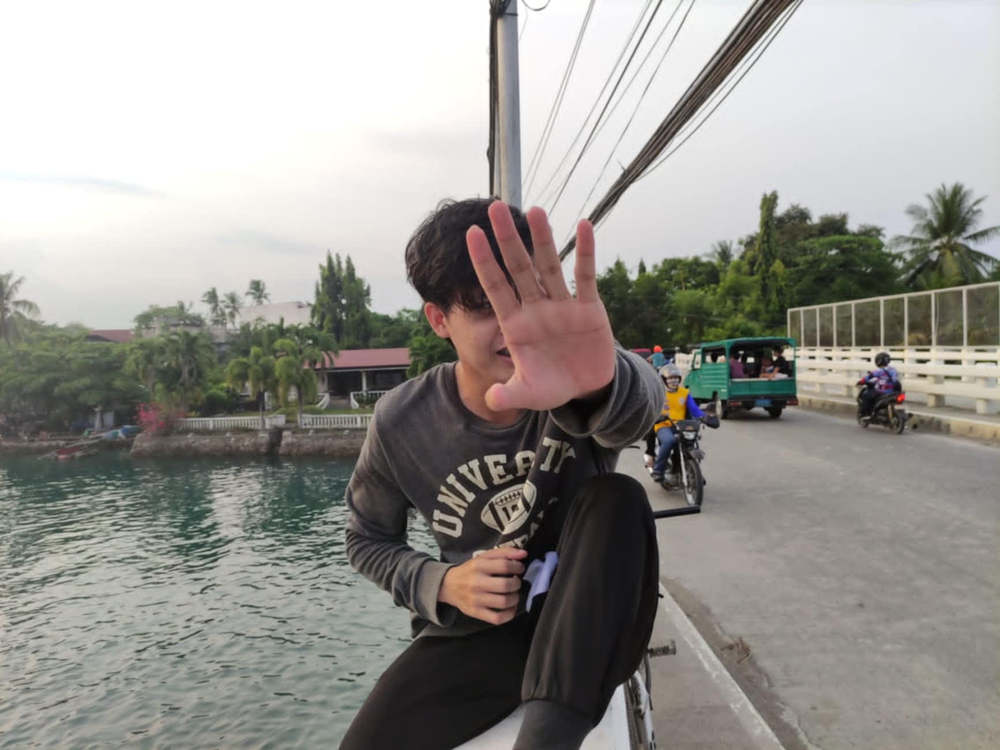

It's so weird when you look back on life. Thinking about when I came to korea feels like so long ago.
When I see this photo. I remember we were roaming around the streets of cebu, from Lapu-Lapu City to Danao.
Riding our bikes going everywhere with only 20 pesos in our pockets "for dehydration" we didn't have any money obviously.
At that moment I realized that Cebu felt like a huge place that was impossible to figure out. Now I'm in South Korea and I feel Cebu is like a tiny place surrounded by waters with hot summer weather.
My final thoughts is that people today are seems all connected. Some of them are fake and only come to you because you have something to give. They don't care about you, the most important in our life is ourself, our family and our close friends. Remember that you should exactly try to do what you want to do and be who want to be in life. Set goals and achieve your dreams no watter the odds.